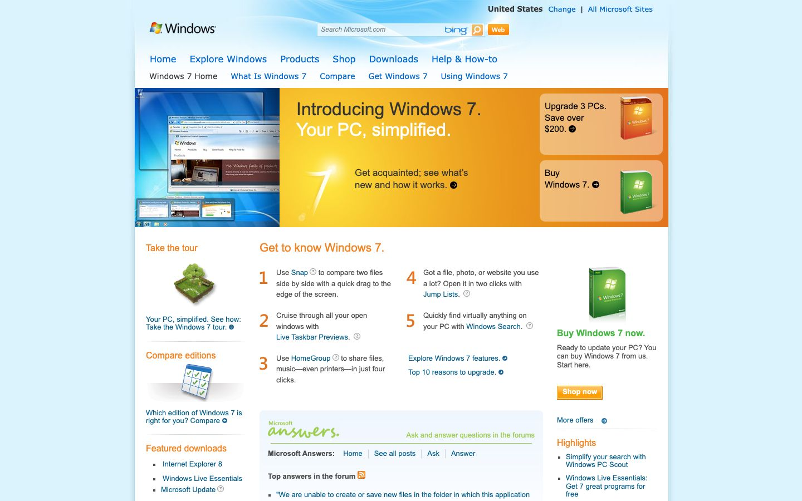

References / Website / 84
Windows 7 website, 2009
Microsoft’s Windows 7 launch site as archived in November 2009.
- Source
- microsoft.com/windows/windows-7 (archived copy)
- Creator
- Microsoft
- Made
- 2009
- Style
- Frutiger Aero (agent-proposed, not yet reviewed by a person)
- Moods
- Optimistic, warm, glossy
- Evidence
- Captured from the Internet Archive with
tools/capture.mjs(headless Chrome, 1440 × 900) on 25 September 2026 and inspected. The archived page may lack some images or scripts that the live page had. - Reviewed
- Rights
- Third-party work, stored with credit for commentary. License: unverified. Rights policy
Observed
- The page sits on a pale sky-blue gradient.
- The hero is a warm orange panel with light streaks and a screenshot of the Windows 7 desktop.
- The tour illustration is a small green grass mound with a tree.
- Product box shots are glossy and green with highlights.
- Links are blue with small round arrow icons.
Why it belongs
The launch site has more of the style than the Vista site: nature motifs and glossy objects arrive in the web layer.
Measured
Machine-extracted by tools/extract-traits.js on . Full measurement.
- Type families
- Segoe UI (97%), segoe ui (3%)
- Type scale ratio
- 1.14
- Median radius
- 0 px
- Mean chroma
- 0.18
- Palette
- #daf3fd 61%
- #4e4e4e 19%
- #005a88 10%
- #0066cc 3%
- #646464 2%
- #333333 2%
- #f58220 1%
- #000000 1%

